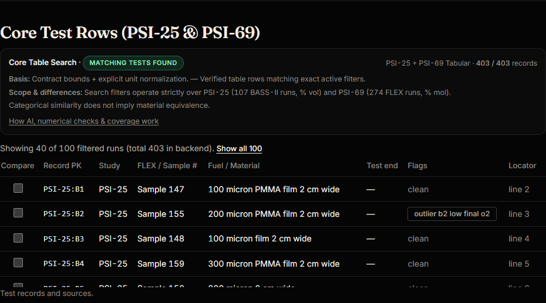

24 catalogued studies.Not all are fully integrated numerically.
403 core test runs.129 BASS-II + 274 FLEX; CFI and SAFFIRE stay separate.
Compare and export.Test IDs, units, rows and SHA-256 provenance.

Actual interface · from record to detail
SHA-256 checks file identity; it does not establish scientific validity.
Sources: catalog.py, data/loader.py, data/query.py; psi_24_source_manifest.json and psi_core_manifest.json. CFI and SAFFIRE-II are excluded from pooled core averages.
GeNAIus / Evidence Assistant
06 / 07
06 · Evidence first, explanation second
Numbers from tables. Explanations with sources.
NASA files
CSV · XLSX · PDF · DOCX
→
Typed records
Table queries + BM25 passage retrieval
→
Optional LLM
OpenRouter / NVIDIA Nemotron
→
Validation
Schema · citations · numbers/units · fallback
Table and scenario queries: zero LLM calls.
BM25 lexical retrieval; no embeddings or vector database.
Invalid model responses are rejected; full semantic correctness is not guaranteed.
Sources: retrieval/bm25.py, answering/, numerical_audit.py, openrouter.py, flex/training.py. Some chart statistics run in the browser; model and answer calculations run in Python.
GeNAIus / Flame in Freefall
07 / 07
07 · Our contribution to the challenge
Find the evidence. See its limits. Trace its source.
Find research
Catalogue and source-linked report access.
Support modelling
Traceable data and separate FLEX estimates.
Expose evidence gaps
A starting point for further tests and control research.
Know what was tested. See what is missing. Trace every claim.
For combustion researchers and spacecraft / habitat engineering teams.